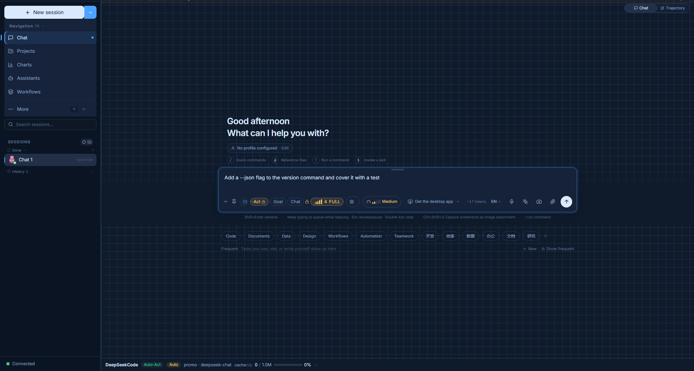
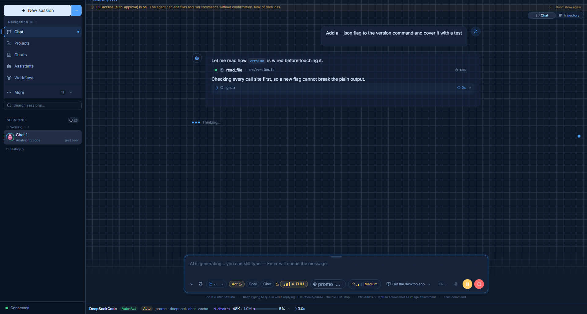

01
理解
读取项目上下文、文件、历史和任务，再开始行动。
DeepSeekCode 将工作流、工具执行、Skills、连接器、插件与缓存感知上下文汇聚到一个可扩展的开发工作台中。通过 Web、CLI 或桌面端使用，同时掌控自己的开发流程。
$ dscode run workspace D:\work\api-gateway model deepseek-chat · 128k ctx mode act Shift+Tab to switch ● read_file src/server.ts 8ms ● grep "createServerApp" 64ms ● edit_file src/server.ts +18 −4✓2 files changed · tests passing
从模糊想法到经过审查的代码变更，模式、工具、上下文和检查点都清晰可见。
读取项目上下文、文件、历史和任务，再开始行动。
把复杂工作拆成可检查、可调整的执行计划。
调用工具、Skills 和连接器，完成下一步变更。
清晰检查命令、差异、日志和结果。
围绕更大的目标，持续推进多个专注任务。
将智能 Agent、扩展机制和用户控制结合起来，适用于真实项目开发。
工作区、日志与配置都由你自己掌控。
读写文件、搜索代码、修改项目、执行命令，全程用自然语言迭代。
按任务需要选择结构，从快速修复到多步骤目标。
把可复用的经验写成可读的 skill，用于规范、发布、测试与领域知识。
需要时把服务、频道与外部上下文接入工作流。
不改动核心 Agent 也能扩展命令、工具、界面与集成。
跨迭代复用相关上下文，工作时能看见缓存状态。
组合文件操作、终端命令、权限、定时与自动化。
在可视化工作台、终端与原生应用之间切换，底层是同一个 Agent。
用 Web 获得完整上下文，用终端追求速度，底层始终是同一个 Agent。

在一个聚焦的界面中管理会话、工作区、模型、模式、工具、Skills、连接器和插件。

从 PowerShell 启动任务，清晰查看模型、工作区、连接状态和自动化状态。

让 Agent 基于项目上下文工作，并在多步骤迭代中看见复用状态。
组合已有能力，不必从零重建开发工具。
组合已有能力，不必从零重建开发工具。
组合已有能力，让 Agent 随项目一起成长。
为偏好终端的开发者提供快速入口，同时保留本地 server 和 Web UI。
安装 CLI 包后，在任意目录使用 dscode 命令。
npm install -g @deepseekcode/cli
dscode --version需要 Node.js 18+。提供 dscode 与 deepseekcode 两个命令。
已经在用 Bun？那就用更轻的安装方式。
bun add -g @deepseekcode/cli
dscode --version需要 Bun。CLI 会连接本地 server 与 Web UI。
打开一个工作区，让 Agent 帮你规划下一步。
dscode run
# local Web UI
http://localhost:8080先配置模型服务商，再打开项目工作区。
用于脚本、钩子与 CI 的非交互用法：dscode exec "<任务>" 执行任务并输出 JSONL。
安装桌面版获得原生体验，也可以从 CLI 开始。下方提供各平台 Release 安装包。
将 DeepSeekCode 带入开发工作流前，先了解这些基础信息。
它是一套 AI 编码工作台，与编辑器互补。用它理解项目、规划工作、修改文件、运行工具并审查变更。
运行时是本地优先的，工作区数据默认留在你的机器上。你主动发给模型服务商的请求仍会到达对方，请按隐私要求配置服务商。
可以。CLI 提供终端原生体验，并与本地 server 和 Web UI 协同工作。
Skills、连接器、插件、MCP 工具、钩子与模型服务商，都能用来适配具体项目或团队。
不是。缓存行为取决于服务商与具体请求。DeepSeekCode 让复用与状态更透明，但不承诺固定的成本下降。